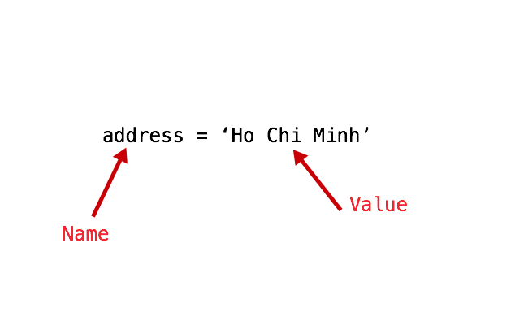
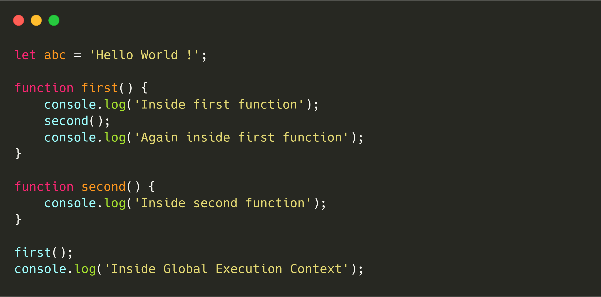
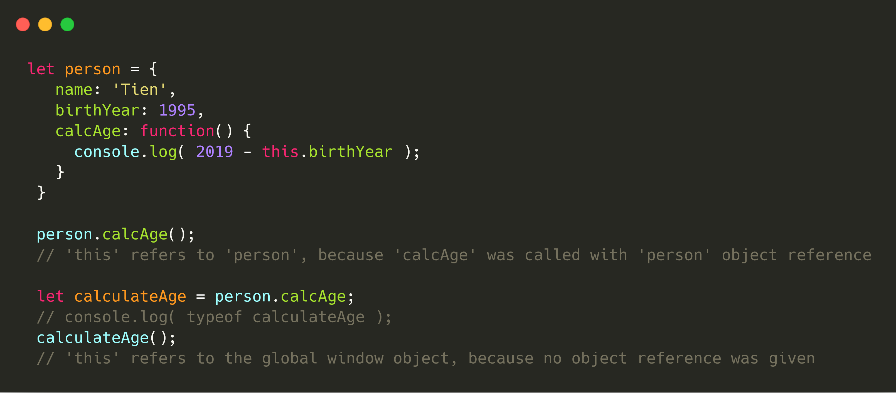
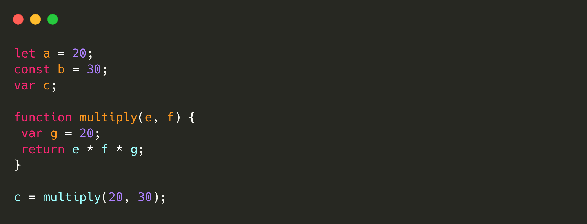
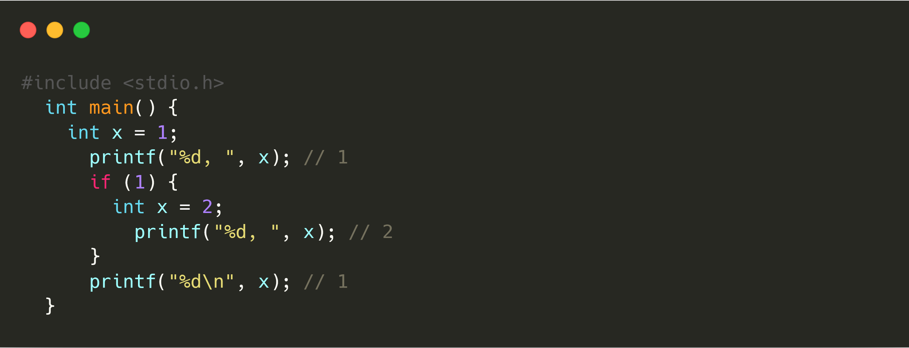
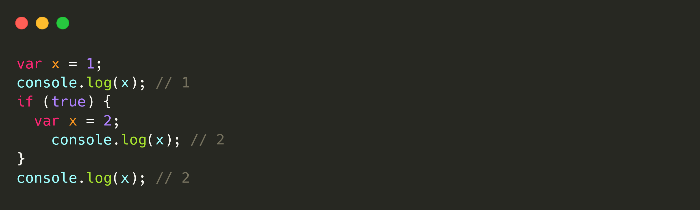
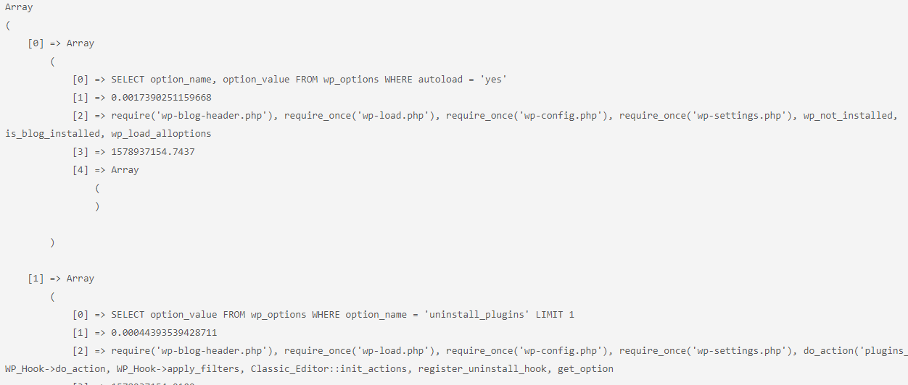

[JS] Introduction
Đây là tài liệu tôi lấy về từ các nguồn để dễ xem khi quên thôi! Khi tôi làm cái web tỉnh này cũng là lúc tôi đặt bàn tay lên code lại sau những ngày suy sụp của dealine, giao tiếp, bla bla ...Khi mọi thứ trở nên quá áp lực vượt qua sực chịu đựng rồi tuyệt vọng các thím ạ. Giờ tôi chỉ còn cách code(nhẹ) tiếp để tiếp tục chiến đấu sau cú trượt vậy !
[JS] Một số khái niệm JavaScript
Parser và Compiler là gì ?
Tại sao cần biết những thuật ngữ này !
Thực sự, bạn không cần biết những khái niệm như Syntax Parser, Execution Context, Lexical Environment là gì vẫn được. Tuy nhiên, nếu bạn muốn hiểu rõ chính xác điều gì đang diễn ra khi code bạn chạy ( đương nhiên vẫn dễ hiểu hơn mã máy nha ) thì các bạn cần phải giải thích được những thuật ngữ khô khan này.
Ngoài ra , những thuật ngữ nền tảng này sẽ theo bạn xuyên suốt quá trình học và làm việc với Javascript sau này. Để hiểu những khái niệm khác như: hoisting trong Javascript (Creation Phase vs. Execution Phase), từ khóa this, array functions thì bạn nên hiểu Syntax Parser, Execution Context, Lexical Environment là gì trước.
Điều đầu tiên, hãy tìm hiểu chuyện gì sẽ xảy ra khi chúng ta khởi chạy trang web trong trình duyệt. Bất cứ khi nào chúng ta tải tệp tin của chúng ta trong trình duyệt, một chương trình được gọi là Syntax parser sẽ đọc code của chúng ta, kiểm tra `ngôn ngữ` và đảm bảo code của chúng ta hợp lệ. Hãy tưởng tượng có một ai đang đọc bài luận của bạn, giúp bạn kiểm tra ngữ pháp và xác định lỗi chính tả, nhưng trong trường hợp của chúng ta là code hay đoạn mã ta viết.
Sau đó, một chương trình khác được gọi là compiler translates ( trình biên dịch ) dịch mã của chúng ta sang thành một ngôn ngữ máy có thể hiểu và tiêu hóa được. Bởi vì Javascript là một ngôn ngữ thông dịch hơn là một ngôn ngữ được biên dịch. Không giống như anh chị em của mình Java. Quá trình biên dịch này được gọi là biên dịch JIT (Just-In-Time), dịch hay còn gọi là dịch động.

Name Value Pair và Object
Trong Javascript, Object rất quan trọng, và chúng ta sẽ nhắc đi nhắc lại Object trong suốt chuỗi bài viết học Javascript. Vì thế ta cần hiểu rõ những định nghĩa này.
Name-Value Pair là gì ?
Ví dụ:
Name-Value là một cặp tên-giá trị, trong trường hợp này là: name là address, value là 'Ho Chi Minh'
Object trong Javascript là gì ?
Mấy ngôn ngữ khác, có thể định nghĩa về object rất phức tạp, nhưng trong javascript định nghĩa object rất đơn giản:
Object là một tập hợp của name values pair
Như hình bên dưới, các name value pair có thể lồng nhau: Value của một name có thể là một 'đống' name value pair khác nhau chứ không phải chỉ có value không.

Để dễ hình dung, ta có thể xem ví dụ một object trong Javascript:

Scope và Context
Trong JavaScript, Scope và Context không giống nhau, và nó rất quan trọng để hiểu về sự khác biệt giữa chúng. May mắn thay, câu trả lời ngắn và đơn giản :D
Câu trả lời ngắn và đơn giản: Scope thì liên quan khả năng hiển thị các biến, còn Context đề cập đến đối tượng mà một chức năng thuộc về.
Scope
Scope phải làm với khả năng hiển thị của các biến. Trong JavaScript, scope đạt được thông qua việc sử dụng functions . Khi bạn sử dụng từ khóa "var" bên trong một function, bạn đang khởi tạo biến đó private trong function đó và không có thể nhìn thấy bên ngoài function đó.
function test1() {
var color = 'red';
}
test();
console.log( test() );
Nhưng nếu có những functions bên trong function đó, Thì những functions `bên trong` có thể nhìn thấy biến đó :D. và biến đó có thể được hiểu trở thành `in-scope`. Những functions có thể thấy biến đó được định nghĩa bên trong chúng. Chúng cũng có thể nhìn thấy bất cứ thứ gì được khai báo bên ngoài chúng, nhưng không bao giờ được khai báo bên trong các functions được lồng trong function đó. Đây là phạm vi trong JavaScript.
// global scope
var color = 'red';
function test() {
return color;
}
console.log( test() ); // red ?
Context
Context liên quan đến đối tượng. Nó đề cập đến đối tượng mà function thuộc về. Khi sử dụng JavaScript từ khóa này đề cập đến đối tượng thuộc thuộc về chức năng nào.
Ví dụ, bên trong một function, bạn có thể nói `this.accountNumber`, bạn đang đề cập đến tính chất `accountNumber`, nó thuộc về object mà chức năng đó thuộc về. Nếu Object `foo` có một phương thức gọi là `bar`. Khi từ khóa `this` được sử dụng trong phương thức `bar`, nó đề cập đến `foo`. Nếu chức năng `bar` được thực thi trong global scope, thì `this` đề cập đến đối tượng window object ( ngoại trừ trong strict mode ). Nó rất quan trọng để lưu ý sử dụng call() or apply() method. bạn có thể thay đổi context trong đó có một số hàm thực thi. Điều này, lần lượt, thay đổi ý nghĩa của `this` bên trong function khi nó được thực thi.
var objA = {
name: 'objA',
sayName: function() {
alert(this.name);
}
}
var objB = {
name: 'objB',
sayName: function() {
alert(this.name);
}
}
// objA.sayName(); // objA
objA.sayName.apply(objB); // objB
[JS] How does JavaScript work?

Nếu bạn đã, đang và muốn trở thành 1 JavaScript Developer? Chắc chắn bạn phải học về Script Program được executed bên trong như thế nào. Việc hiểu những nội dung như execution context (exec context) và execution stack (exec stack) là rất quan trọng. Bởi vì nó giúp ta hiểu được các khái niệm khác nữa trong JavaScript như Hoisting, Scope và Closures. Việc hiểu rõ các khái niệm này sẽ khiến bạn trở thành 1 JavaScript developer giỏi hơn rất nhiều. Vậy thì ta bắt đầu tìm hiểu thôi nào!
V8 - JavaScript Engine
V8 hay còn gọi là Chrome V8, là một JavaScript engine được phát triển bởi Chromium Project, mục đích ban đầu là dành cho Google Chrome nói riêng và Chromium nói chung. Được ra mắt lần đầu vào tháng 12 năm 2008. 1 năm sau Nodejs và MongoDB ra mắt và cũng sử dụng V8 làm JavaScript engine cho mình, tuy nhiên với MongoDB thì đến phiên bản 3.2 đã chuyển từ V8 sang SpiderMokey - một JavaScript engine khác.
Tôi nghĩ nên bắt đầu học JavaScript bằng cách tìm hiểu 'JavaScript Engine' là gì? Nó là một chương trình hoặc trình thông dịch thực thi mã JavaScript. Một JavaScript engine có thể thông dịch như thường, hoặc biên dịch just-in-time từ Javascript thành bytecode (ta sẽ nói về cách này sau). Tóm lại nó là cốt lõi làm những đoạn code tuyệt đẹp của bạn chuyển sang mã máy tính mà máy có thể hiểu và chạy được.
A JavaScript engine is a program or interpreter which executes JavaScript code.
Dưới đây là một số JavaScript nổi tiếng:
-
SpiderMonkey
Ông tổ của JavaScript engine, được dùng trên trình duyệt web đầu tiên trên thế giới, Netscape Navigator, hiện tại đang được sử dụng trên Firefox, viết bằng C và C++.
-
Chakra
Là một JavaScript engine cũng khá lâu đời, ban đầu được sử dụng trên Internet Explorer và biên dịch JScript, hay được dùng cho Microsoft Edge, viết bằng C++.
-
Rhino
Một Engine viết hoàn toàn bằng Java, cũng có lịch sử phát triển lâu đời từ Netscape Navigator, hiện tại được phát triển bởi Mozilla Foundation.
-
V8
Tôi đã nói bên trên.
Nó thực hiện công việc này thông qua hai giai đoạn (two phase): Memory creation phase và execution phase, và những mã đó sẽ không được thực thi cho đến giai đoạn thứ 2 (second phase). Mình ngừng JavaScript Engine đến đây thôi :) nói tiếp nữa thì tôi nghĩ là qua một chủ đề khác.
Execution Context
Ta hiểu đơn giản rằng, Execution context (EC) là 1 khái niệm trừu tượng của môi trường. Nơi mà các đoạn mã JavaScript được evaluated_và _executed. Bất kì đoạn mã nào run trong JavaScript, nó sẽ chạy bên trong exec context.
Execution context trong JavaScript được chia thành 3 loại:
-
Global Execution Context
Đây là execution context mặc định hay còn là base execution context. Những đoạn code không trong bất cứ function nào sẽ được _executed_trong global execution context.
Nó làm 2 nhiêm vụ: Đầu tiên tạo global object - gọi là window object ( Trong trường hợp là browsers ) sau đó là gắn value của this với global object này. Điều cuối cùng là chỉ có duy nhất 1 global execution context trong 1 chương trình.
-
Function Execution Context
Mỗi lần 1 function được invoked, sẽ có 1 execution context mới được tạo ra cho function đó. Mỗi function sẽ có execution context riêng của nó. Nhưng chỉ được tạo ra khi function được invoked hoặc được called.
Và có thể có rất nhiều *function execution context*. Bất kể khi nào 1 execution context mới được gọi. Nó sẽ trải qua 1 chuỗi các steps theo thứ tự xác định - ta sẽ thảo luận nó sau.
-
Eval Function Execution Context
Code mà được executed bên trong 1 eval function cũng có những execution context riêng của nó, nhưng vì eval không được sử dụng nhiều bởi các developers JavaScript, nên ta sẽ không thảo luận nó trong bài này.
+ Xem ví dụ minh họa:
// Global context
var sayHello = "Hello";
function person() { // Execution context
var first = 'David',
last = 'Shariff';
function firstName() { // Execution context
return first;
}
function lastName() { // Execution context
return last;
}
alert( sayHello + firstName() + '' + lastName() );
}
Như hình trên, ta có một global context với viền màu tím, và 3 function contexts. Sẽ chỉ có duy nhất 1 global context, và nó có thể được truy cập sử dụng từ bất cứ context nào trong chương trình cùng source code.
Execution Stack
Execution stack còn được biết đến là “calling stack” trong các ngôn ngữ lập trình khác. Đây là 1 stack với cấu trúc LIFO ( Last in, First Out ). Được sử dụng để lưu giữ tất cả exec context đã được tạo ra trong suốt chương trình.
Khi JavaScript Engine encounter(gặp) những đoạn script của bạn lần đầu tiên. Nó sẽ tạo ra global exec context và đẩy nó vào trong execution stack hiện tại. Mỗi khi mà engine tìm được 1 function invocation, nó sẽ tạo ra 1 exec context mới cho function đó. Sau đó đẩy nó lên trên đỉnh của stack.
Engine sẽ thực thi function mà exec context ở trên đỉnh của stack trước. Sau khi function này complete nó sẽ bị đẩy ra khỏi stack. Và control sẽ đi tới context phía dưới trong stack.
Để hiểu rõ hơn ta sẽ cùng xem đoạn code phía dưới:
Khi đoạn code phía trên load trong browser. JavaScript Engine tạo ra 1 global execution context rồi đẩy nó vào execution stack hiện tại. Khi lần gọi first() diễn ra, JavaScript engines tạo ra 1 execution context cho function đó và đẩy nó lên trên đỉnh của execution stack.
Đến khi second() function được gọi trong first() function, JavaScript engine lại tạo ra 1 execution context mới cho function này rồi tiếp tục đẩy nó lên trên đỉnh của execution stack. Sau khi second() function kết thúc, nó bị _pop_ra khỏi stack, và control lại đi tiếp tới execution context bên dưới - đó là first() execution context.
Cho tới khi first() function kết thúc, execution stack của nó bị xóa khỏi stack và control đi tiếp tới global execution context. Khi tất cả code được _executed_JavaScipt engine xóa gloabl execution context khỏi stack.
Ví dụ khác theo ảnh GIF, bạn tử giải thích lại như trên xem.

5 đặc điểm của execution stack cần nắm :
- Xử lý đơn luồng. (single threaded)
- Xử lý đồng bộ. ( ? )
- Có duy nhất 1 Global context.
- Vô hạn function contexts.
- Mỗi function khi được gọi sẽ sinh ra 1 execution context tương ứng, ngay cả khi nó gọi đến chính nó.
How is the Execution Context create ?
Đến đây, ta đã thấy JavaScript engine đã quản lý những execution context như thế nào. Bây giờ, chúng ta sẽ tìm hiểu xem 1 execution context được tạo ra kiểu gì bởi Javascript engine.
Execution context được tạo ra qua 2 giai đoạn: 1 là Create Phase, 2 là Execution Phase.
Trước khi code JavaScript được executed, execution context đi qua giai đoạn creation phase. 3 điều này xảy ra trong suốt giai đoạn creation phase là :
- Values of this được xác định, còn được gọi là This Binding.
- LexicalEnvironment component được khởi tạo.
- VariableEnvironment component được khởi tạo.
ExecutionContext = {
ThisBinding = , LexicalEnvironment = { … },
VariableEnvironment = { … },
}
This Binding
Trong global execution context, value of this tham chiếu tới global object. ( this tham chiếu tới Window Object ).
Trong functione execution context, value of this phục thuôc vào cách function được gọi như thế nào. Nếu nó được gọi bởi 1 object reference, thìa value of this được gán vào object đó, nếu không thì value of this được gán vào global object hoặc `undefined` ( in strict mode ). Ví dụ:
Lexical Evironment
Lexical Environment là 1 'loại kỹ thuật' được dùng để define sự kết hợp của Identifiers tới các variables riêng biệt và những functions dựa trên lexical nesting structure of ECMAScript code. 1 Lexical Environment bao gồm 1 Environment Record và 1 biến null có thể tham chiếu tới Lexical Environment bên ngoài.
Ta hiểu đơn giản hơn như sau: Lexical Environment là 1 cấu trúc giữ **identifier-variable mapping** (ở đây **identifier** tham chiếu tới tên của variables/function, và **variable** là 1 tham chiếu tới những actual object. [bao gồm function type object] hoặc [primitive value])
Trong Lexical Environment, được chia ra thành 2 components: (1) environment record và (2) là 1 reference to outer environment
- Environment record là 1 nơi mà variable và function declaration được lưu trữ.
- Reference to the outer environemt có nghĩa là nó truy cập tới lexical environment bên ngoài của nó.
Lexical environment lại được chia tiếp ra thành 2 loại:
- Global environment (trong global exec context) là 1 Lexical Environment - không có outer environment. Outer environment reference của global environment là null. Nó có global object (window object) và những methods hay properties. (vd. array methods) bên trong environment record như các variables được người dùng định nghĩa. Và value of this sẽ tham chiếu tới global object.
- Function environment:Tại đây, các variables được định nghĩa bên trong function sẽ được lưu giữ tại environment record. Sự tham chiếu tới outer environment có thể là global environment hoặc 1 outer function environment đang chứa inner function
Chú ý:
Với function environment, environment record còn chứa 1 arguments object mà nó contain mapping giữa các index và các argumentđược truyền vào function và length number của những arguments đó nữa. Ví dụ 1 argument object của function phía dưới được thể hiện như sau:
function foo(a, b) { var c = a + b; } foo(2, 3); // argument object Arguments: {0: 2, 1: 3, length: 2},
Trong environment record lại được chia tiếp ra thành 2 loại:
- Declarative environment record: lưu trữ những variables, functions, và các parameters. 1 function environment chứa declarative environment record.
- Object environment record: dùng để xác định mối liên kết giữa những variable và function xuất hiện trong global execution context. 1 global environment chứa object environment record.
1 cách trừu tương, lexical environment sẽ được biểu diễn như sau:
GlobalExectionContext = {
LexicalEnvironment: {
EnvironmentRecord: {
Type: "Object",
_// Identifier bindings go here_ }
outer:
}
}
FunctionExectionContext = {
LexicalEnvironment: {
EnvironmentRecord: {
Type: "Declarative",
_// Identifier bindings go here_ }
outer:
}
}
Variable Environment:
Nó cũng được coi là Lexical Environment. Bên cạnh đó, Environment record của nó sẽ giữ những bindings được tạo ra bởi các VariableStatements trong exec context.
Như đã nói bên trên, variable environment cũng là 1 lexical environment. Vì thế nó cũng có những properties của 1 lexical environment.
Trong ES6, 1 điều khác biệt giữa LexicalEnvironmet component và VariableEnvironment là “the former” được sử dụng để lưu giữ function declaration và các variables ( let và const ), sau này thì nó chỉ được dùng để lưu giữ variable ( var ) bindings thôi.
The exec context sẽ được biểu diễn như sau:
GlobalExectionContext = {
ThisBinding: ,
LexicalEnvironment: {
EnvironmentRecord: {
Type: "Object",
// Identifier bindings go here
a: < uninitialized >,
b: < uninitialized >,
multiply: < func >
}
outer:
},
VariableEnvironment: {
EnvironmentRecord: {
Type: "Object",
// Identifier bindings go here
c: undefined,
}
outer:
}
}
FunctionExectionContext = {
ThisBinding: ,
LexicalEnvironment: {
EnvironmentRecord: {
Type: "Declarative",
// Identifier bindings go here
Arguments: {0: 20, 1: 30, length: 2},
},
outer:
},
VariableEnvironment: {
EnvironmentRecord: {
Type: "Declarative",
// Identifier bindings go here
g: undefined
},
outer:
}
}
Chú ý
Function exec context chỉ được tạo ra khi lời gọi multiplyfuncton được encountered.
Như bạn thấy, let và const variables được định nghĩa những lại không có bất kì value assoiated nào, nhưng khi var variables được định nghĩa thì lại được gán là undifined.
Lý do là vì trong suốt quá trình creation phase, các mã code của ta sẽ được scanned cho các variable và function declarations, trong khi function declaration được lưu giữ trong environment của riêng nó, thì các variables được khởi tạo lại được gán là undefined (trong trường hợp var) hoặc là uninitialized (trong trường hợp let và const).
Đó là lý do vì sao bạn có thể truy cập nhưng var variables được defined trước khi mà chúng được declared (mặc dù vẫn là undefined) nhưng bạn sẽ gặp phải lỗi tham chiếu khi truy cập các let và const variables trước khi chúng được declaraed.
This is, what we call hoisting.[JS] Hoisting Javascript

Hoisting là một khái niệm khá hay trong JavaScript tuy nhiên lại ít được mọi người để ý do nó có đôi chút phức tạp cũng như mọi người ít quan tâm đến cách thức hoạt động bên trong ngôn ngữ lập trình. Trong bài viết này mình, mình sẽ chỉ ra khái niệm cũng như cách thức hoạt động bên trong. Do kiến thức còn hạn chế nhiều nên sẽ có nhiều lỗi, mong các bạn góp ý để mình hoàn thiện kiến thức.
Một số khái niệm cần nắm
Hãy xem đoạn code bằng C sau:
Kết quả nhận được lần lượt là 1, 2, 1 bởi vì họ hàng nhà C có thuộc tính block-level scope, vì thế trong đoạn lệnh if, một scope mới được tạo ra, biến x được tạo ra trong scope mới mà không ảnh hưởng gì tới biến x nằm ở scope bên ngoài.
Tuy nhiên, với JavaScript:
Hoisting of variables
Hoisting là hành động mặc định của Javascript, nó sẽ chuyển phần khai báo lên phía trên top Trong JavaScript, một biến (variable) có thể được khai báo sau khi được sử dụng.
#ex1: console.log( a );
Kết quả không có gì lạ: raise lỗi a is not define, bởi biến a chưa được khai báo ở đâu cả
#ex2: console.log( a ); a = 'Hello hoisting';
Ví dụ này có vẻ phức tạp hơn ví dụ trên "rất nhiều" nhưng kết quả vẫn chỉ có một: a is not define
#Ex3: var a; console.log(a);
Output sẽ là undefined vì a đã được khai báo nhưng vẫn chưa được gán giá trị
#Ex4: console.log(a); var a;
Thật tình cờ và thật bất ngờ, kết quả ra trùng với Ex3, đều là undefined Tại sao lại như vậy ???
#Ex5 console.log(a); var a = 'Hello Hoisting' #Output = ???
Kết quả sẽ được diễn giải theo sơ đồ sau:

Giải thích:
- Trình biên dịch của Javascript sẽ phân tách phần var a = 'Hello Hoisting' thành 2 phần là khai báo và gán giá trị Khai báo: var a Gán giá trị a = 'Hello Hoisting'
- Theo Hoisting, Javascipt sẽ chuyển phần khai báo lên trên top. Vì vậy, sẽ chỉ có phần khai báo được chuyển lên trên top, còn phần gán giá trị vẫn giữ nguyên thứ tự nên vẫn ở dưới Vậy nên Output sẽ là undefined.
Hoisting of function
Trình biên dịch Javascript sẽ chuyển phần khai báo lên trên top giống như cách làm với biến. Ví dụ 6:
say_something('YOLO');
function say_something(a){
console.log(a);
}
Output cũng giống như với phần biến YOLO
#Ex7:
do_something();
function do_something(){
console.log(a);
var a = 'fly';
}
Kết quả sẽ được diễn giải theo sơ đồ sau:

Giải thích:
- Cũng giống như với phần 1, phần bên trong của hàm do_something cũng được trình biên dịch sử dụng hoisting.
- Nhưng phần khai báo chỉ được chuyển lên trên top của hàm do_something chứ không phải của chương trình
Vậy nên, Output sẽ là undefined
Hoisting function vs Hoisting variable
Trình biên dịch Javascript sẽ chuyển phần đinh nghĩa của hàm trước phần khai báo của biến Ví dụ 8:
var show_me;
show_me();
function show_me() {
console.log('Money');
}
show_me = function() {
console.log('Diamond');
}
Theo định nghĩa trên, output sẽ là Money
Những hàm khai báo sau nếu trùng tên sẽ ghi đè lên hàm khai báo trước
var show_me;
show_me();
function show_me(){
console.log('Money');
}
show_me = function(){
console.log('Diamond');
}
function show_me(){
console.log('Gem');
}
Output sẽ là Gem.
[WP] Debug ways
Hiển thị tất cả Queries trên một trang
Trong thư mục:
wp-config.php
// Hiển thị các câu truy vấn trên cùng một trang của WP
define("SAVEQUERIES", true);
Tiếp ở functions.php đối với theme, ở plugin bỏ ở đâu tùy bạn:
functions.php
function debug_output() {
global $wpdb;
echo "";
print_r( $wpdb->queries );
echo "";
}
add_action( "wp_footer", "debug_output" );
Kết quả:
Trong đó: có câu truy vấn, tốc độ, các file liên quan bla bla .... Mấy bạn tìm hiểu thêm.
[WP] Hooks <3
[WP] Menu Nav Walker
[ つづく ]